Blobforge mesher comparison
commit 2b396068b9e33ab24bf94e55f294f0ebc6f1323a — 41 CPU-rendered panels, identical camera per row, one neutral material. Static posed geometry.
cells: 20, 10, 5 mm; panels at 20 mm.
control-sphere
main (0.366 m half-extent)
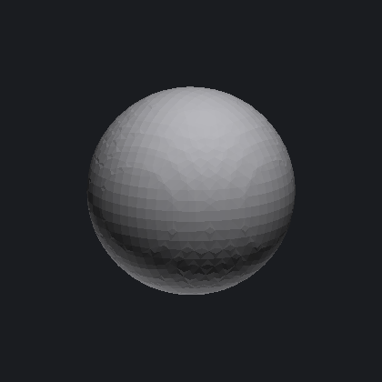
surface-nets — 3732 tris
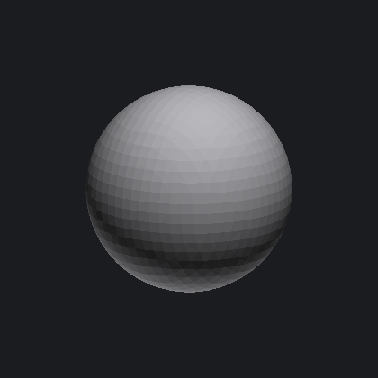
marching-cubes — 3728 tris
dual-contouring — 3732 tris
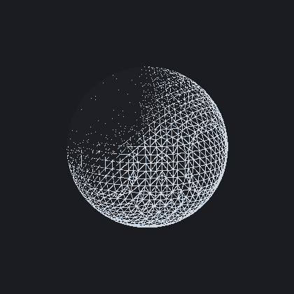
surface-nets (wireframe) — 3732 tris
control-sharp-box
main (0.472 m half-extent)
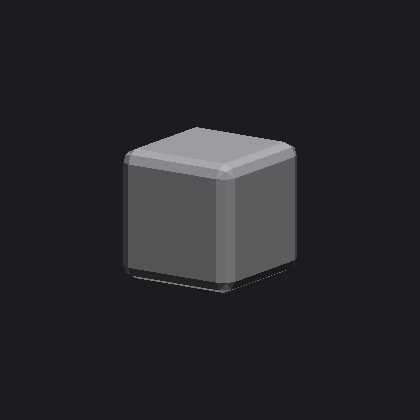
surface-nets — 2352 tris
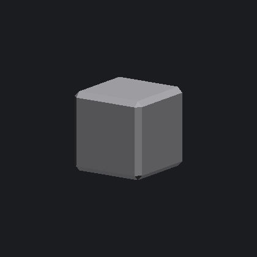
marching-cubes — 2348 tris
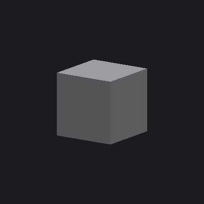
dual-contouring — 2352 tris
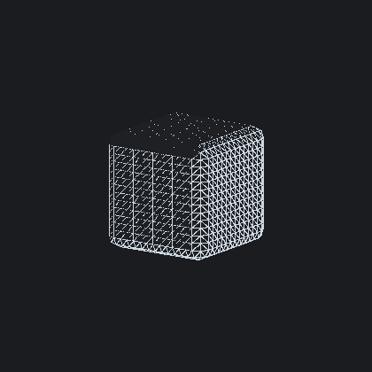
surface-nets (wireframe) — 2352 tris
closeup-corner-+++ (0.073 m half-extent)
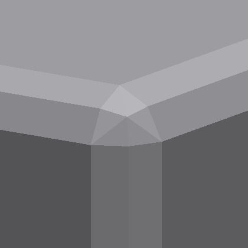
surface-nets — 2352 tris
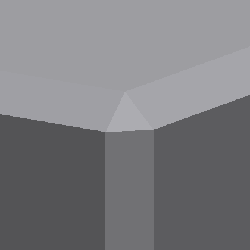
marching-cubes — 2348 tris
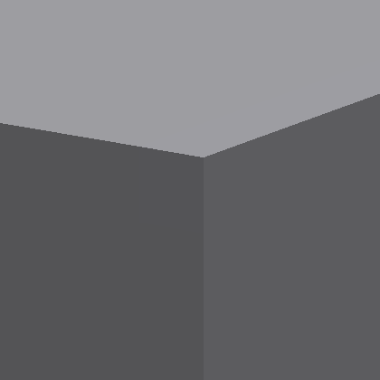
dual-contouring — 2352 tris
closeup-face-+x (0.061 m half-extent)
surface-nets — 2352 tris
 marching-cubes — 2348 tris
marching-cubes — 2348 tris
 dual-contouring — 2352 tris
dual-contouring — 2352 tris
chamfer-groove
main (0.298 m half-extent)
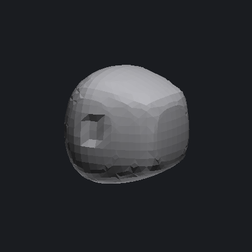
surface-nets — 1932 tris
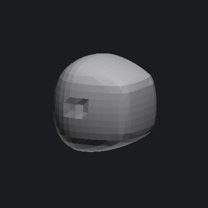
marching-cubes — 1928 tris
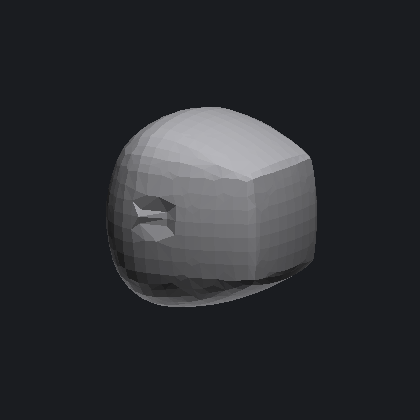
dual-contouring — 1932 tris
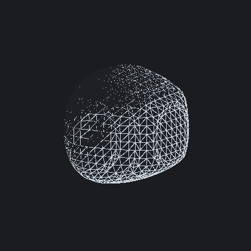
surface-nets (wireframe) — 1932 tris
closeup-chamfer-seam (0.208 m half-extent)
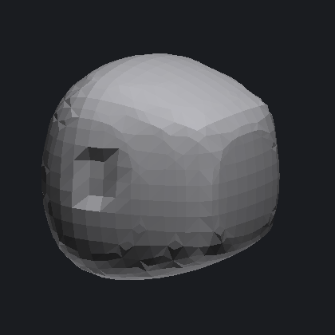
surface-nets — 1932 tris
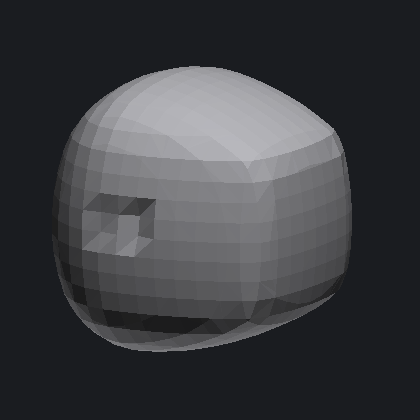
marching-cubes — 1928 tris
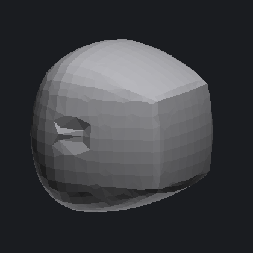
dual-contouring — 1932 tris
closeup-groove-channel (0.184 m half-extent)
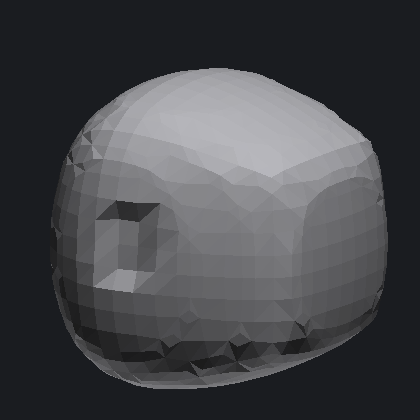
surface-nets — 1932 tris
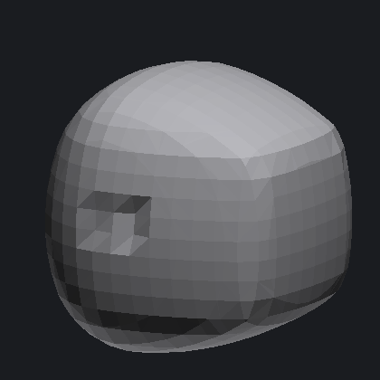
marching-cubes — 1928 tris
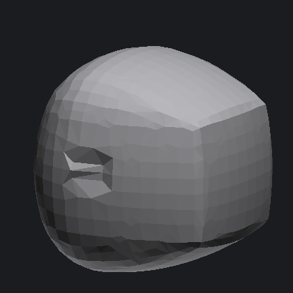
dual-contouring — 1932 tris
character-head
main (0.523 m half-extent)
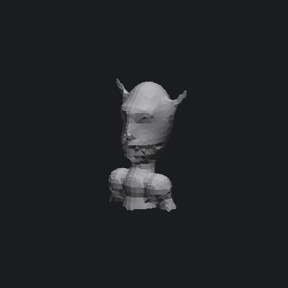
surface-nets — 2176 tris
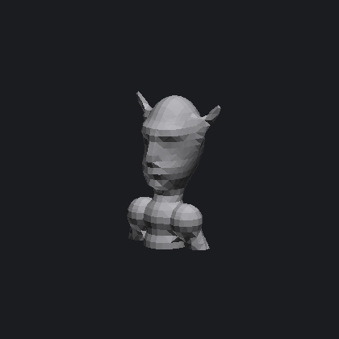
marching-cubes — 2226 tris
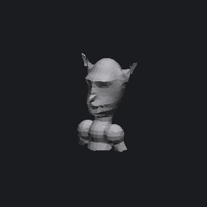
dual-contouring — 2176 tris
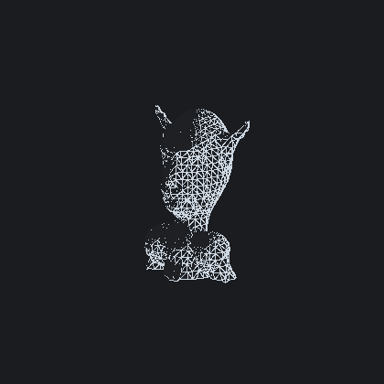
surface-nets (wireframe) — 2176 tris
closeup-ear-l (0.143 m half-extent)
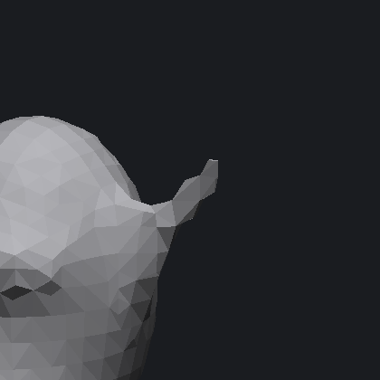
surface-nets — 2176 tris
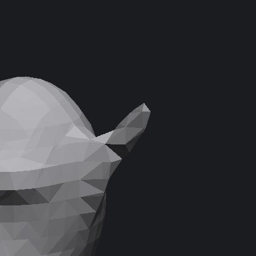
marching-cubes — 2226 tris
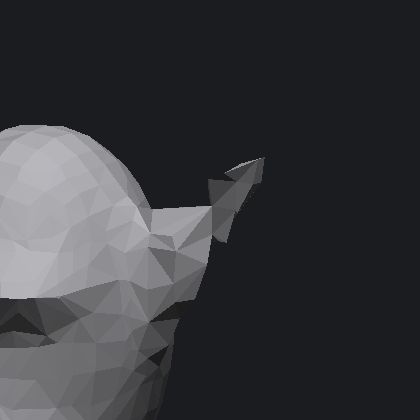
dual-contouring — 2176 tris
closeup-ear-r (0.143 m half-extent)
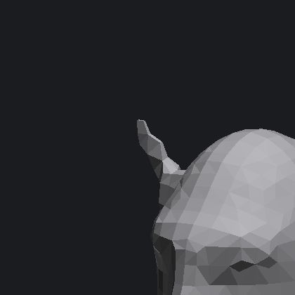
surface-nets — 2176 tris
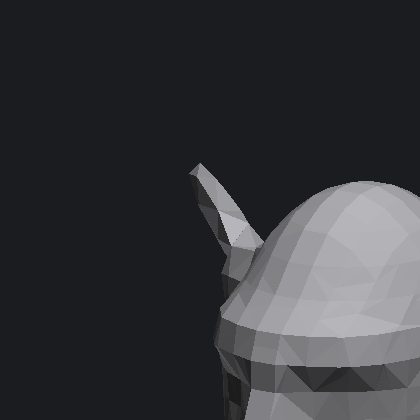
marching-cubes — 2226 tris
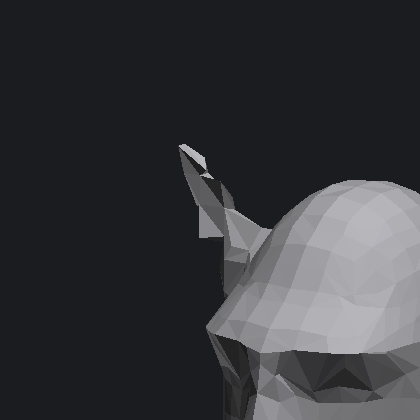
dual-contouring — 2176 tris
torn-chunk
main (0.168 m half-extent)
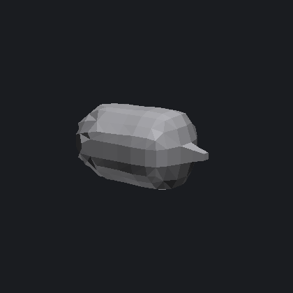
surface-nets — 364 tris
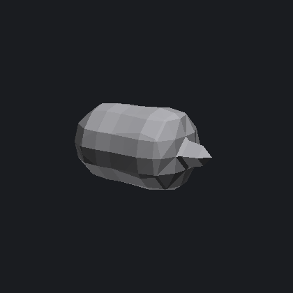
marching-cubes — 360 tris
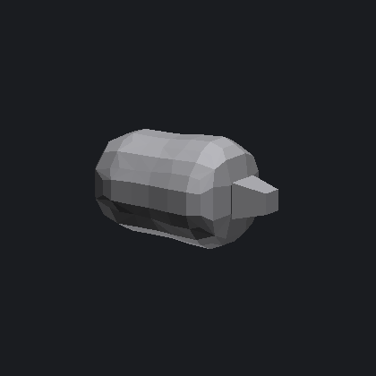
dual-contouring — 364 tris
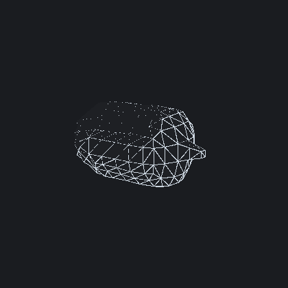
surface-nets (wireframe) — 364 tris
closeup-crater-rim (0.112 m half-extent)
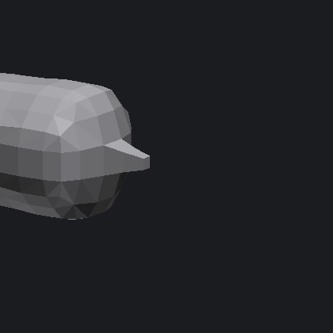
surface-nets — 364 tris
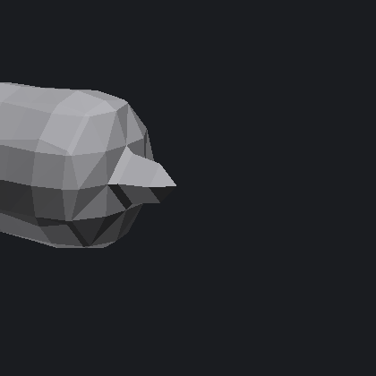
marching-cubes — 360 tris
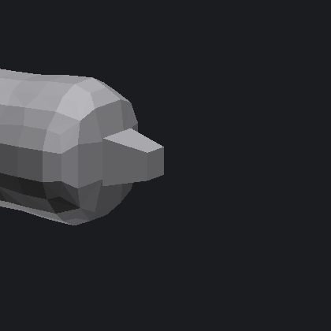
dual-contouring — 364 tris